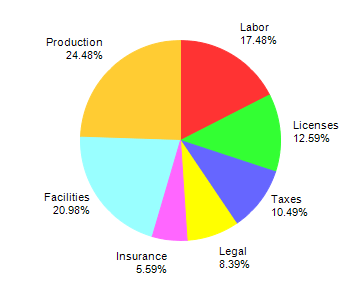

This example demonstrates the basic steps in creating pie charts.
The following is the command line version of the code in "cppdemo/simplepie". The MFC version of the code is in "mfcdemo/mfcdemo". The Qt Widgets version of the code is in "qtdemo/qtdemo". The QML/Qt Quick version of the code is in "qmldemo/qmldemo".
#include "chartdir.h"
int main(int argc, char *argv[])
{
// The data for the pie chart
double data[] = {25, 18, 15, 12, 8, 30, 35};
const int data_size = (int)(sizeof(data)/sizeof(*data));
// The labels for the pie chart
const char* labels[] = {"Labor", "Licenses", "Taxes", "Legal", "Insurance", "Facilities",
"Production"};
const int labels_size = (int)(sizeof(labels)/sizeof(*labels));
// Create a PieChart object of size 360 x 300 pixels
PieChart* c = new PieChart(360, 300);
// Set the center of the pie at (180, 140) and the radius to 100 pixels
c->setPieSize(180, 140, 100);
// Set the pie data and the pie labels
c->setData(DoubleArray(data, data_size), StringArray(labels, labels_size));
// Output the chart
c->makeChart("simplepie.png");
//free up resources
delete c;
return 0;
}
© 2023 Advanced Software Engineering Limited. All rights reserved.